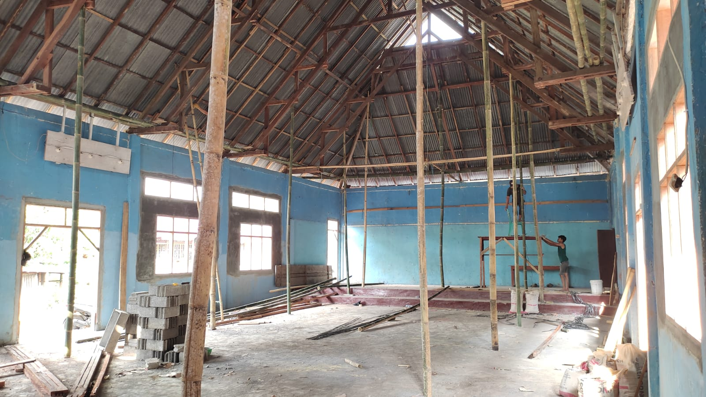

Pembangunan Infrastruktur
Pembangunan fisik yang terus berjalan, seperti rehabilitasi balai desa, pemasangan jalan paving, serta pembangunan drainase guna kenyamanan aktivitas warga.
Mewujudkan masyarakat Desa yang maju, berkepribadian, mandiri, dan berkelanjutan.
Total Penduduk
Kristen
Islam
Katolik
Desa Tompasobaru Satu adalah hasil pemekaran dari desa Tompasobaru yang terbagi menjadi dua desa. Diresmikan pada tahun 1978 dengan penunjukan pejabat Hukum Tua pertama, Bapak J.A Runtuwene.
"Mewujudkan masyarakat Desa Tompasobaru Satu yang maju dan berkepribadian."


Hukum Tua

Sekretaris Desa

Kaur TU & Umum
Kaur Keuangan
Kasi Pemerintahan
Kasi Kesejahteraan
Staf Desa
Hasil bumi melimpah yang menjadi penggerak ekonomi utama dan menunjang kebutuhan sehari-hari warga desa.

Kegiatan masyarakat menanam bibit secara gotong royong untuk ketahanan pangan desa.
.jpg)
Membersihkan dan mengelola lahan. Tanaman ini dibudidayakan untuk menghasilkan minyak nilam yang memiliki nilai jual tinggi.

Pembangunan fisik yang terus berjalan, seperti rehabilitasi balai desa, pemasangan jalan paving, serta pembangunan drainase guna kenyamanan aktivitas warga.

Penyaluran bantuan logistik dan sembako untuk menjaga ketahanan pangan keluarga, khususnya dalam merespons kebutuhan mendesak masyarakat.

Penyaluran BLT Dana Desa yang tepat sasaran sebagai wujud penanggulangan dampak ekonomi dan pemulihan kesejahteraan bagi keluarga yang membutuhkan.
Menyelenggarakan kegiatan kesehatan rutin setiap bulan melalui Posyandu. Kegiatan ini juga berfokus pada langkah pencegahan dan penanggulangan stunting sejak dini.
Punya pertanyaan, butuh layanan dokumen administrasi, atau pelaporan desa? Hubungi kami langsung.
Balai Desa Tompasobaru Satu,
Kec. Tompasobaru, Kab. Minahasa Selatan
+62 858-2783-3566